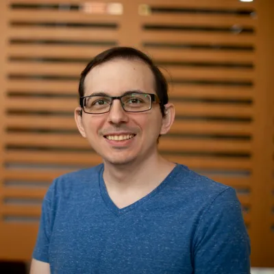
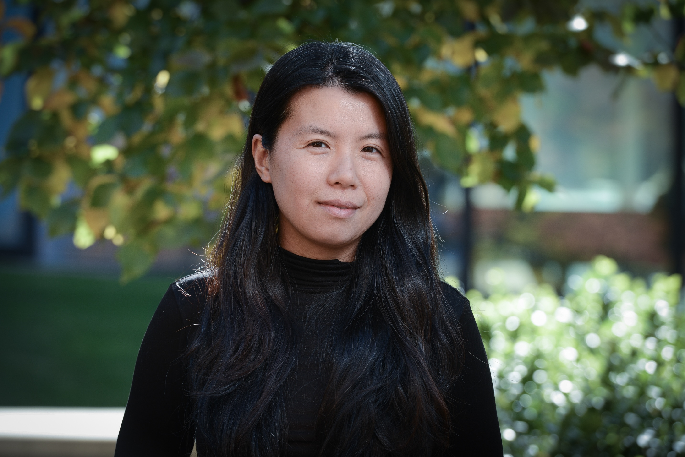

Current BayesComp-ISBA board members
Chris Oates. Section Chair 2023-2025.

Chris is a Professor of Statistics at Newcastle University and Fellow at the Alan Turing Institute, UK. Chris is interested in computational statistics, kernel methods, machine learning, and uncertainty quantification. For more information, visit his website.
Anirban Bhattacharya. Section Chair-Elect 2023-2025.
Anirban is a Professor in the Department of Statistics at Texas A&M University, College Station, TX. Anirban's work focuses on methodological, theoretical, and computational aspects of modern Bayesian statistics and machine learning. For more information, visit his website.
Antonio Linero. Program Chair 2023-2025.
Antonio is an Associate Professor in the Department of Statistics and Data Sciences at the University of Texas at Austin. Antonio's work focuses on the intersection of computation, theory, and application of Bayesian nonparametric methods to problems in causal inference and missing data. For more information, visit his website.
Susan Wei. Treasurer 2025–2027.
Susan is an Associate Professor at Monash University. Her research focuses on statistical machine learning, especially Bayesian deep learning and singular learning theory. More at suswei.com.
Akihiko Nishimura. Secretary 2025-2027.
Aki is an Assistant Professor of Biostatistics at Johns Hopkins University. His work centers on developing Bayesian (and occasionally non-Bayesian) methods and computational tools for analyzing large complex biomedical data, with particular emphasis on health data analytics and statistical genetics. For more information, visit his website.